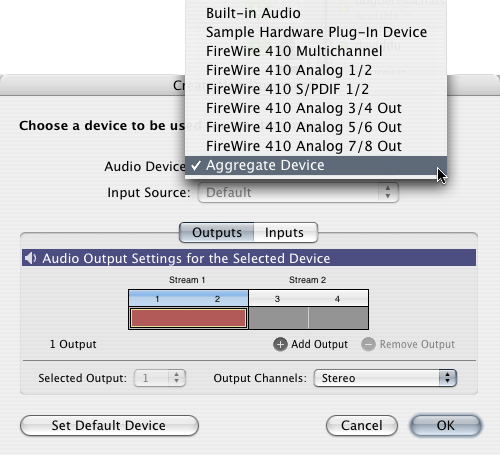

Q: Why am I unable to select an input device in AU LabA: AU Lab requires that input and output tracks be created on the same physical device. When running on a computer such as an Intel-based Mac or attempting to use a built-in digital I/O device the solution is to use the Audio MIDI Setup application to create an Aggregate device (under File menu) and then add your required devices to the aggregate, thus appearing as a single physical device to AU Lab. IMPORTANT: You must have administrator privileges to create an Aggregate Device. How to create an aggregate device Launch Audio MIDI Setup.app and select 'Open Aggregate Device Editor' from File menu Click the '+' icon to create a new aggregate, a list of real devices should then appear in the 'Structure' box. Enable the 'Use' checkbox for real devices you would like included in the aggregate device The aggregate device should now show (x) inputs and (x) outputs (number of inputs/outputs may vary depending on configuration), click Done. ...now launch AU Lab The aggregate should now appear in the 'Audio Device' popup menu, select it.  Add any appropriate outputs Click the 'Inputs' tab and it should allow you to add inputs my clicking the '+' icon Configure any inputs and hit 'OK' when done, you should now have an AULab document with inputs and outputs
Document Revision History| Date | Notes |
|---|
| 2007-05-17 | First Version |
Posted: 2007-05-17
|